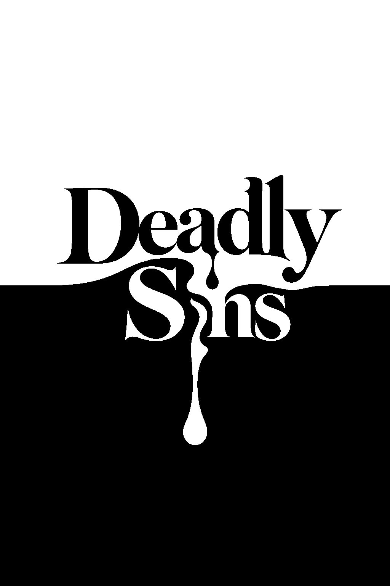

01 / 07
QUESTION 01
RESULT
YOUR DEADLY SIN
SIN PROFILE
EACH SIN LEVEL
빈 칠각형 = 약함채운 칠각형 = 강함
당신의 욕망을
채워주세요
당신의 죄악을 닮은 한 잔을 만나보세요.

QUESTION 01
YOUR DEADLY SIN
SIN PROFILE
EACH SIN LEVEL
당신의 죄악을 닮은 한 잔을 만나보세요.